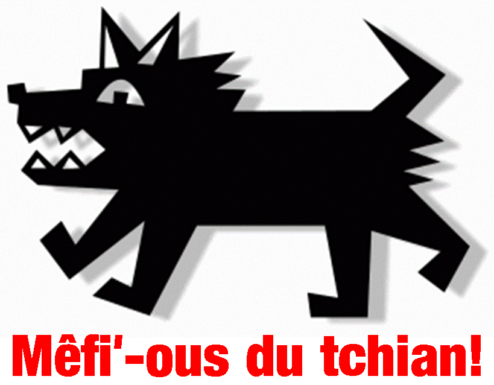

Il arrivit dans les p'tites heuthes du matîn, auprès la fête du mais d'Mai mil neu chents quatrevingtsix. J'avais pensé qu'i' 'tait l'fouângnot d' la portée car i'n'savait pas dé ioù qu' lé lait v'nait. I cherchait partout, piaillant à seule fîn d'trouver sa méthe. I' faisait du brit comme les mathionettes Sooty et Sweep; et ch'est comme chenna qu' i' r'chut san nom Sweep.
Sa méthe n'li'donnit pon dé r'pos mais chenna n'faisait pon d'difféthence à Sweep. Il aime tout et tout l'monde quand j'sommes à nos prom'ner sus les c'mîns d'falaise.

Tout l'monde peut entrer dans la maîson, mais quand i' monte dans ma vouaituthe, né v'là eune difféthente histouaithe. I' dait s'assiéthe à l'avant comme contre-maître à r'niflier l'air pouor navidgi. Viyant qu'il est en chèrge, pèrsonne né peut s'appréchi d'la vouaituthe.
Eune séthée auprès la Batâle dé Flieurs j'tais à emm'ner not' vaîsinne siez lyi. Jé stâtionnis ma vouaituthe à côte d' la maîson et j''m'en fus ouvri la porte d'siez lyi. J'ouï du brit et quand j' sortis, ch'tait un aut' moto qu'avait tapé lé mein.
J'ouvris la porte d'driéthe pour vaie si Sweep avait d'ma. J'tais bein ravie dé vaie qu'i'n'tait pas là. Jé freunmis la porte est la r'ouvrit eune deuxième fais, mais i' n'tait acouo pas là chutte fais ninnetout. J'sis-t'i'imbécile! Auprès qué la police avait finni d'examminer l'accident, I'n'y' avait autcheune sîngne dé Sweep, et j'èrmuînmes la vouaituthe siez man péthe.
Eh bein, n'lé v'là en haut d'la cache à sauter en haut comme pouor dithe 'Eyoù qu'tu tais?. J'ai'té ichin d'pis deux heuthes.
Dans sa vie il a ieu tout pliein d'mêtchièrs, par exempl'ye, apprenti vitriyi: il voulait saver comment qu' la fénêtre 'tait arrangi et i' copit sa patte jusqu'à l' os. Mais i' r'entrit et s'assiévit d'vant lé feu, pas du tout gêné, lé pouôrre baloque!
Nou fut oblyigi dé l'am'ner siez l' vétérinnaithe, mais quand jé d'cendais les d'gré - né v'là! jé trébutchis en portant vîngt-chîn kilos dé tchian. Jé tchînmes: Sweep tchit d'un côté - et mé, j'tchis dé l'autre. Le tchian tappit eune cage de gerbils et les gerbils s'afollîtent.
Le vétérinaithe èrmînt le tchian en bouon ordre et quand i' 'tait finni ch'tait man tou d'aller sus la tabl'ye. Quand lé vétérinnaithe avait finni auvec nos deux , Sweep marchait et ch'tait mé qui 'tait a cliopinner auvec la g'vil'ye êteurse
Au mais d'octobre ma maison est eune bouonne pliaiche pour les hérissons, qui veinnent dans man gardîn. Sweep les ramassent dans sa bouoche et les apporte dans la maison et les r'pose dans san liet, tch'est eune grande pouque à pais. J'fus rêvilyie eune séthée par lé tchian tchi ouassait dans la tchuîsinne. Jé d'cendis et j'dêcouvris qu'i' y'avait un hérisson là, dans la bolle à Sweep, à mangi san dîner. Deux heuthes auprès, ouah! ouah! l'hérisson avait laissi tchiquechose dans sa bolle. Et j'peux vos dithe qué Sweep n'tait pas bein content. J'lî'dis:
'Ch'est tan visiteur et ch'est tan problième!'
I'n'a pas ieu eune êducâtion mais i' sait compter. Pour san dêjeuner, il a trais galettes spéciales, et pis eune grande galette. Si j'êprouve d'lî donner tchique autre sorte de galettes I'm'èrgarde pour dithe:
Eyoù qu'i' sont mes trais galettes spéciales? I' faut explyitchi au tchian, à sept heuthes du matîn, i'faut va cherche au supermarché, tu na va demain. I' garde sa grande galette duthant la journée que j'ai reveins d'trava et pis I' l'a mange. Quand les êcoles sont en vacances, I'n'est mangi pas sa grande galette car j'sis a la maison tout t'jour. Sa bolle tait pliein galettes mais sa fait pas difféthence, i'fait qu'y a ses r'pas a l'heure. (I like my meals on time)eune tinné d'la viande à tchain. Un fait qu'il a finne san r'pas l'fait qui nettit sa bouoche sus la natte.
À m'suthe qu'i' vieillit, i' ouait un mio haut, I' n'vait pon hardi bein et il a un mio d'rhonmatisse. Mais si tu trouve eune pouque en pliastique ou bein un papi d'chucrîn ouprend les cliés, ou d'la bougréthie à la télévision, i' l'ouait et i' saute partout.
Comme le vétérinnaithe dit «i' n'ouait ni à ji ni à jo»
Eune journée quand i' tait acouo un p'tit tchian j'avais l'mitan d'un rouôlot d'papi d'toilette et j'chantais deux lîngnes dé 'In the Mood' dé Glen Miller et pis l'tchian s'lanchait amont la montée pouor prendre lé rouôlot. Et chaque fais qu'i' ouait Glen Miller sus l'radio i' chèrche acouo lé rouôlot.
I' faut que j'm'arrête là-d'ssus, car si j' continnue, ous allez m'dithe qu'lé tchian est comme sa maîtresse - à maintchi cratchi!
AleP
2001
Viyiz étout: